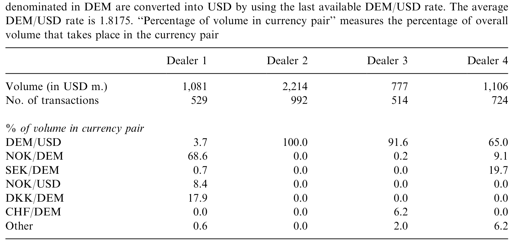
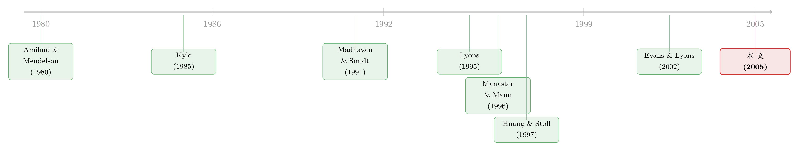

全世界最大的市场，做市商却从不靠「改价」管库存
本文读的是 Bjønnes & Rime (2005, Journal of Financial Economics)：用一家斯堪的纳维亚银行四位外汇交易员一整周「逐笔成交」的完整记录，作者发现库存控制确实是外汇交易的「头等大事」——库存的半衰期短到只有几分钟；但出人意料的是，做市商并不是靠调整自己的报价（quote shading）来消库存的。这恰恰推翻了 Lyons (1995) 在同一市场上得到的「价格库存效应」结论。
1 一个悬念：库存到底是怎么被「压平」的？
先说一个几乎所有外汇交易员都会点头的常识：库存控制是这行的命门（"inventory control is the name of the game in FX"）。一个手里攥着太多某种货币的做市商，是坐立不安的——汇率随时可能反向一跳，把他的账面利润抹平。于是他必须想办法把库存尽快「压」回零附近。
问题是，他怎么压？
微观结构理论给了两个看似都很合理、却指向完全不同行为的答案。
第一个答案来自 库存模型 (inventory models)，比如 Amihud and Mendelson (1980)、Ho and Stoll (1981)。它说：一个风险厌恶的做市商，如果手里某货币太多，就会压低自己的报价去吸引买家、赶走卖家——这就是所谓的「报价倾斜」(quote shading)。注意，这里库存是通过做市商自己的价格起作用的。
第二个答案来自 信息模型 (information-based models)，比如 Kyle (1985)、Glosten and Milgrom (1985)。它说：价格里之所以有信息，是因为某些交易对手是知情的；做市商每收到一笔单子，就要据此更新预期（买单→上调，卖单→下调），并用价差来保护自己不被知情交易者「割」。这里起作用的是 逆向选择 (adverse selection)，跟库存无关。
这两套机制并不互斥——Lyons (1995) 那篇著名的、同样研究外汇做市商的论文，就同时找到了证据，而且特别强调了一个通过价格起作用的库存效应。看上去，故事到此已经讲完了。
但真正关键的一步在于：Lyons 的数据是 1992 年 8 月一位做市商一周的记录。而从 1992 年到 1998 年，这个市场已经面目全非了。
2 市场变了：电子经纪商的崛起
要理解这篇论文为什么能得出和 Lyons 相反的结论，得先看清外汇市场长什么样。它和我们熟悉的 NYSE 专家制 (specialist) 市场完全不同——它是一个去中心化的多做市商市场 (decentralized multiple dealership market)，透明度极低，而且几乎不受监管。
在做市商之间（interdealer market），有两条交易渠道：
- 直接交易 (direct / bilateral trades)：通过 Reuters D2000-1 系统，一对一报价。发起方（initiator）问价，报价方在 bid 或 ask 成交，没有讨价还价的余地。这种交易是非匿名的——你看得见对手是谁。
- 经纪商交易 (brokered trades)：又分传统的「声音经纪商」(voice brokers) 和更新的「电子经纪商」(electronic brokers，即 Reuters D2000-2 和 EBS)。在经纪商处，你可以挂限价单 (limit order)，也可以吃别人的限价单（市价单 market order）。对手身份要等成交后才揭晓。
这个区分至关重要。在直接交易里，做市商是被动的——他给报价，由对方决定何时、买卖多少、方向如何。而在经纪商处挂限价单，做市商可以自己决定何时挂、挂多大、甚至挂哪个方向。
接着，一个自然的数字摆在眼前：1992 年电子经纪商刚问世时，做市商间市场大致由直接交易和声音经纪商平分。到了 1998 年，声音经纪商的份额已萎缩到约 15%，直接交易降到约 35%，剩下的 50% 全被电子经纪商吃掉了。
这意味着什么？意味着 Lyons 笔下那位「只能靠报价倾斜来调库存」的做市商，在 1998 年已经有了一个全新的、更快的出口：他不必再守株待兔等下一笔单子上门，而是可以主动冲到电子经纪商那里，挂个单或吃个单，瞬间把库存甩出去。
这正是全文的「核心张力」：在单一做市商结构里（如 Madhavan and Smidt (1991) 的模型），做市商唯一的库存调节工具就是改自己的报价；而在外汇这种混合市场结构 (hybrid market structure) 里，他多了「主动出击」(outgoing trades) 这条路。一旦有了这条路，他还需要委屈自己去改报价吗？
3 数据：四个人，一周，逐笔留痕
作者拿到的是一家大型斯堪的纳维亚银行（DnB）四位即期外汇交易员在 1998 年 3 月 2–6 日一周内的全部成交记录。这份数据的珍贵之处，在于它同时包含了三样别处难求的东西：成交价、成交量，以及做市商的库存 (inventory)——而且还标明了每笔交易用的是哪个交易系统、谁是发起方。
数据由两套来源拼接而成：(i) 做市商内部用于盯库存的记录（涵盖直接交易、电子经纪、声音经纪、行内交易、客户交易等所有成交），(ii) 电子系统（D2000-1/D2000-2/EBS）的明细。前者让作者能算出每一刻的库存头寸，后者提供到秒的时间戳、对手名、谁发起、问价量、买卖报价、成交量与成交价。
四位做市商各有「人设」，作者还给他们起了绰号：
- Dealer 1——NOK/DEM 市场的最大做市商（自估市占约
40%），称「NOK/DEM Market Maker」，周成交USD 1,081百万； - Dealer 2——只做 DEM/USD 的「DEM/USD Market Maker」，周成交
USD 2,214百万； - Dealer 3——因极度依赖电子经纪商，得名「Nintendo dealer」；
- Dealer 4——做 SEK/DEM 和 DEM/USD 的「SEK & USD Dealer」。
把这四个人的交易类型摊开看（见表 2），最刺眼的对比就出来了。两位「市场做市商」（Dealer 1、2）的所有直接交易都是 incoming（被动接单）——这是典型的做市行为；但 Dealer 3、4 几乎只用电子经纪商。而衡量「主动性」的关键指标——outgoing trades（主动出击）的占比——四人差异极大：Dealer 1 只有 22%，Dealer 2 约 50%，Dealer 3 高达 57%，Dealer 4 是 33%。

Table 2: presents some statistics about the different types of trades. We focus on
作为对照，Lyons (1995) 那位做市商的画风完全不同：他 66.7% 是直接交易，剩下 33.3% 全走传统声音经纪商，其中约 90% 的直接交易是 incoming——也就是说，他主要靠做市赚买卖价差，几乎不碰电子经纪商（那时它还没普及），也完全没有客户交易。
同一家银行的四个人尚且如此不同——他们「绝非来自做市商总体的四次独立抽样」。但即便如此，所有四人都表现出强烈的库存控制。这就把矛头引向了一个更深的问题：库存控制是共性，但控制的手段因人而异。
4 模型与方法：库存真的在「均值回归」吗？
要证明库存控制不只是「下班前归零」那么表面，得看日内库存有没有持续地往零拉。库存模型预言库存序列是均值回归 (mean reverting) 的。作者用一个极简的设定来检验：
$$\Delta I_{it} = a + b\, I_{i,t-1} + \varepsilon_t$$
其中 \(\Delta I_{it}\) 是相对上一笔成交（无论 incoming 还是 outgoing）的库存变化。逻辑很干净：如果 \(b = 0\)，库存就是非平稳 (nonstationary) 的随机游走，谈不上控制；如果 \(b < 0\)，则库存被一只看不见的手往均值拽——这正是库存控制的特征。
四位做市商的结果是清一色的 \(b < 0\)，强均值回归。更惊人的是速度：库存的中位半衰期 (median half-lives) 介于不到 1 分钟到 15 分钟之间。相比股票市场动辄数天的库存半衰期，外汇做市商的库存几乎是「烫手山芋」——拿到手就想扔。这与 Manaster and Mann (1996) 对期货做市商的发现一脉相承。
但这里有个技术难点：四人中只有 Dealer 2 单做 DEM/USD，其余三人横跨多个货币对，那他们的「相关库存」到底是什么？是各货币对独立看，还是要考虑组合 (portfolio) 的相关性？作者借用了 Ho and Stoll (1983) 的「等价库存」(equivalent inventory) 概念，并依 Naik and Yadav (2003) 的做法计算：
这里的 \(b_{j,k}\) 是收益率回归线的斜率，即 \(\mathrm{Cov}[R_j,R_k]/\mathrm{Var}[R_j]\)，用样本期前两年的 Datastream 日汇率（从挪威 FX 做市商的视角、统一折成 NOK）估出，并剔除 5% 水平下不显著的 \(b\)。直觉是：一个 DEM/USD 的多头，对一个同时持有相关货币对的做市商而言，其「真实风险敞口」要把相关头寸一并算进去。
5 反转：价格里没有库存的影子
到这里，「库存控制很强」已经板上钉钉。接下来才是全文最精彩的一击——这种控制，是不是通过做市商自己的报价实现的？
作者先上了与 Lyons (1995) 同源的 Madhavan and Smidt (1991) 模型。结果：完全得不到支持。
然后，作者第一次把 Huang and Stoll (1997) 的「指标模型」(indicator model) 引入外汇市场。在这个模型里，携带信息的是交易的方向 (direction of trade)。换了这把尺子，效果好得多：他们发现逆向选择占了有效价差 (effective spread) 中相当大的一块；信息效应在直接双边交易中还会随成交量上升——大单更「吓人」。订单流的累积值与价格水平协整 (cointegrated)，进一步坐实了私有信息在外汇市场的分量（这与 Evans and Lyons (2002) 在市场总量层面假设的信息观一致）。
但最关键的一句话是这样的：
他们找不到任何证据表明库存是通过做市商自己的价格起作用的。
强信息效应 + 弱（甚至无）价格库存效应——这与 Vitale (1998) 对英国金边债券、以及 Madhavan and Smidt (1991, 1993)、Hasbrouck and Sofianos (1993) 对股票市场的发现遥相呼应，却与 Lyons (1995) 的「强价格库存效应」正面相左。
于是问题被逼到了墙角：既然库存被压得这么快、这么狠，可价格里又看不到库存的影子，那库存到底是怎么被消掉的？
答案就藏在第 2 节埋下的伏笔里——做市商根本不靠改报价，他们靠「主动出击」。在多做市商的混合市场里，Dealer 们用限价单、市价单、双边吃价这些工具，把库存直接交易出去，而不是耐心地用倾斜的报价去「等」对手上门。这也解释了为什么四个人的交易风格如此迥异：库存控制的目标是共同的，但实现它的路径（多少 incoming、多少 outgoing、走直接还是走经纪商）是各自的选择。这一点，恰恰是单做市商模型（做市商只能改价）永远刻画不出来的。
（关于做市商在外汇市场里如何受风险预算约束、以及流动性如何随之收紧，可参见《做市商的「风险预算」一旦绷紧，价格和成交量就开始各说各话》；关于把外汇流动性拆成价格冲击的度量，可参见《全世界最大的市场，也有「推不动」的时候》。）
6 文献脉络
把这条线索拉直，能看到两股力量的交汇与角力。
一股是库存。 从 Amihud and Mendelson (1980)、Ho and Stoll (1981, 1983) 奠定的库存模型出发，核心命题是「风险厌恶的做市商靠改价来管库存」。Manaster and Mann (1996) 在期货市场上发现了一个微妙的裂缝：库存有强均值回归，但价格库存效应却很弱——本文在外汇市场上把这条裂缝撕得更大。
另一股是信息。 Kyle (1985)、Glosten and Milgrom (1985) 把逆向选择写进定价，Easley and O'Hara (1987) 进一步讨论成交量与信息的关系。在度量手段上，Huang and Stoll (1997) 的指标模型成了把价差拆成「逆向选择 vs. 其他」的利器——本文是把它搬进外汇市场的第一篇。
两股力量在外汇市场上的第一次正面交锋，是 Lyons (1995)。 他用 1992 年的单做市商数据，得出「信息 + 强价格库存效应」。本文则用 1998 年、电子经纪商已占半壁江山的市场环境，用四位做市商的数据给出反例：信息效应依旧强劲，价格库存效应却消失了。再往后，Evans and Lyons (2002)、Evans (2002)、Payne (2003) 把订单流推向了「微观结构—宏观」的汇率研究新方向。

本文所处的位置，正是这条脉络的一个转折注脚：它告诉后来者，库存控制的「行为」与库存控制的「价格印记」是两回事；市场结构一变（从单做市商到混合多做市商），同一个目标会长出截然不同的实现路径。
7 评论与延伸（Q&A + 研究方向）
(a) 几个可能的疑问
Q：只有四个做市商、一周数据，结论可信吗？
样本确实小，而且四人同在一家银行，并非总体的独立抽样——作者自己也坦承这点。但优势在于数据的完整性与稀有性：逐笔成交、库存、系统选择、发起方一应俱全，这是当时（乃至现在）极难获得的。结论的力度不在「外部有效性」，而在于它构成了对 Lyons (1995) 的一个干净反例：哪怕只有四个人，只要他们都表现出「强库存控制 + 无价格库存效应」，就足以说明 Lyons 的结论并非普适。
Q：「没有价格库存效应」会不会只是模型设定（Madhavan-Smidt 失败）造成的假象？
这是最该担心的点。作者的防线是「双保险」：Madhavan-Smidt 模型得不到支持，换上 Huang-Stoll 指标模型后，信息效应被清晰地识别出来、且随成交量上升，唯独库存的价格效应仍然缺席。两个不同设定都指向同一结论，比单一模型更稳。但严格说，这仍是「在这两类模型框架内」的结论。
Q：库存半衰期「几分钟」是不是太夸张了？
放在股票市场确实夸张，但放在外汇就合理。外汇是全球最大、流动性最深的市场，单笔成交动辄百万美元级，且做市商有电子经纪商这个「即时出口」。半衰期短，本身就是「主动出击式库存管理」的直接体现——库存一上来就被甩掉了。
Q：incoming 和 outgoing 的区分，为什么是全文的「题眼」？
因为它把「被动做市」和「主动消库存」在数据上分了开。incoming 是别人来吃你的报价（你被动）；outgoing 是你去吃别人的报价或主动挂单（你主动）。Lyons 的做市商
90%直接交易是 incoming，几乎只能靠改价管库存；而本文的 Dealer 3 有57%是 outgoing。正是这条「主动出击」的渠道，让价格库存效应变得不必要。
Q：这和「外汇市场没有信息」的老印象冲突吗？
恰恰相反，本文强化了「外汇市场有私有信息」这一新共识。逆向选择占有效价差很大一块、订单流与价格协整、信息随成交量增强——都说明客户订单流里藏着对公共消息的解读与未来风险溢价的信息（Lyons (2001) 对此有系统论述）。
Q：结论对今天的电子化、匿名化市场还成立吗？
本文捕捉的恰是「电子经纪商崛起」这一结构变迁的中段。随着匿名电子平台进一步主导，库存管理只会更依赖「主动出击」而非「报价倾斜」。匿名性本身如何影响价差，是另一个有趣的问题（可参见《看不见报价人的名字，价差为什么反而变窄了？》）。
(b) 几个可能的研究问题与提案
1. 把「库存控制路径」搬到公司债 OTC 市场。 【经济故事】公司债同样是去中心化的做市商市场，但缺乏外汇那样的电子经纪「即时出口」，做市商更可能被迫持有库存、并通过价格（成交价差）来消化。比较「有/无中央限价簿」的债券，能直接检验「混合市场结构 → 主动出击 → 价格库存效应消失」这条因果链。 【可行性】中。TRACE 提供逐笔成交，但缺做市商库存——这正是本文数据的核心优势。需结合监管端（如 FINRA/官方）持仓数据或交易商问卷，识别上有挑战，但方向 doable。
2. 外资做市商 vs. 本地做市商的库存管理差异。 【经济故事】本文四人同在一家斯堪的纳维亚银行。若能区分本地与外资做市商，可检验「信息优势」与「库存管理风格」是否随交易对手的地理/信息网络而变——外资做市商或许更依赖经纪商（信息劣势→更主动甩库存）。 【可行性】中。需要带交易商身份与国籍标签的逐笔数据，EBS/Refinitiv 的脱敏数据可能支持，但拿到带库存的版本很难。
3. 库存半衰期与流动性危机的关系。 【经济故事】本文的「几分钟半衰期」是常态下的结果。在压力期（如 2008、2020 三月），「主动出击」的出口会不会堵死，迫使做市商重新回到「改价管库存」？若是，价格库存效应会在危机中「复活」。 【可行性】高。危机期的外汇/债券逐笔数据可得，可用事件窗口对比半衰期与价格库存系数的时变。识别清晰，doable。
4. 把 incoming/outgoing 标签接到做市商盈亏上。 【经济故事】Lyons 的做市商靠 incoming 赚价差；本文做市商更多 outgoing。那么「主动出击型」做市商的利润来源是什么——是更快的库存周转，还是承担了逆向选择成本？这能把「交易风格」与「盈利模式」直接挂钩。 【可行性】中高。本文数据已含价、量、库存、发起方，原则上可构建逐笔盈亏分解；需要更长样本来保证统计功效。
8 我的判断与参考文献
贡献。 这篇论文最有价值的地方，不在于它「又跑了一遍微观结构回归」，而在于它用一份罕见的完整数据，把一个被默认的等式——「库存控制 = 报价倾斜」——拆开了。它证明：库存控制的强度（均值回归、几分钟半衰期）与库存在价格上的印记是两件可以分离的事；一旦市场结构提供了「主动出击」的渠道，做市商就会用脚投票，绕开改价这条路。它也是把 Huang-Stoll 指标模型引入外汇市场的第一篇，方法上有承上启下之功。
对识别的担忧。 四个做市商、一周、同一家银行，这是无法回避的局限——结论是「反例」性质的，外部有效性需要更大样本来背书。此外，「无价格库存效应」终究是在 Madhavan-Smidt 与 Huang-Stoll 两类框架内得到的；若做市商以更隐蔽的方式（如调整双边报价的方向性而非水平）管理库存，现有模型未必能捕捉。等价库存的构造依赖样本前两年的相关性估计，在汇率相关性结构发生突变时也可能失真。
后续想看到什么。 我最想看到的，是把这套「incoming/outgoing + 库存半衰期 + 价格库存系数」的三件套，放到带做市商库存的公司债或新兴市场货币数据上去复现——尤其是在压力期，检验「主动出击的出口一旦堵死，价格库存效应是否复活」。那将把本文的横截面发现，升级成一个关于市场结构与流动性的动态命题。
参考文献
- Admati, A. R., Pfleiderer, P. (1988). A theory of intraday patterns: volume and price variability. Review of Financial Studies 1, 3–40.
- Amihud, Y., Mendelson, H. (1980). Dealership market: market making with inventory. Journal of Financial Economics 8, 31–53.
- Bjønnes, G. H., Rime, D. (2005). Dealer behavior and trading systems in foreign exchange markets. Journal of Financial Economics 75(3), 571–605.
- Easley, D., O'Hara, M. (1987). Price, trade size, and information in securities markets. Journal of Financial Economics 19, 69–90.
- Evans, M. D. D. (2002). FX trading and exchange rate dynamics. Journal of Finance 57, 2405–2447.
- Evans, M. D. D., Lyons, R. K. (2002). Order flow and exchange rate dynamics. Journal of Political Economy 110, 170–180.
- Glosten, L. R., Milgrom, P. R. (1985). Bid, ask, and transaction prices in a specialist market with heterogeneously informed traders. Journal of Financial Economics 14, 71–100.
- Hasbrouck, J., Sofianos, G. (1993). The trades of market makers: an empirical analysis of NYSE specialists. Journal of Finance 48, 1565–1593.
- Ho, T., Stoll, H. R. (1981). Optimal dealer pricing under transactions and return uncertainty. Journal of Financial Economics 9, 47–73.
- Ho, T., Stoll, H. R. (1983). The dynamics of dealer markets under competition. Journal of Finance 38, 1053–1074.
- Huang, R. D., Stoll, H. R. (1997). The components of the bid–ask spread: a general approach. Review of Financial Studies 10, 995–1034.
- Kyle, A. S. (1985). Continuous auctions and insider trading. Econometrica 53, 1315–1335.
- Lyons, R. K. (1995). Tests of microstructural hypothesis in the foreign exchange market. Journal of Financial Economics 39, 321–351.
- Madhavan, A., Smidt, S. (1991). A Bayesian model of intraday specialist pricing. Journal of Financial Economics 30, 99–134.
- Madhavan, A., Smidt, S. (1993). An analysis of changes in specialist inventories and quotations. Journal of Finance 48, 1595–1628.
- Manaster, S., Mann, S. C. (1996). Life in the pits: competitive market making and inventory control. Review of Financial Studies 9, 953–976.
- Naik, N. Y., Yadav, P. K. (2003). Do dealer firms manage inventory on a stock-by-stock or a portfolio basis? Journal of Financial Economics 69, 325–353.
- Vitale, P. (1998). Two months in the life of several gilt-edged market makers on the London Stock Exchange. Journal of International Financial Markets, Institutions and Money 8, 413–432.